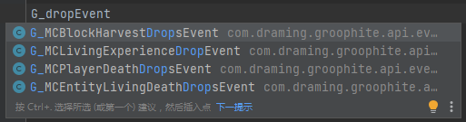

事件系统
事件系统可以做什么？当某件事发生时，它就会执行你想要让它执行的操作，这就是事件系统的作用。事件系统可以来做许多事，比如修改方块、怪物的掉落物，在玩家第一次进世界时给玩家初始物品，或是记录玩家的死亡点等。
这里以修改方块掉落物为例，把橡木的掉落物改为橡木木板。
思考和写脚本的过程
1.开头部分
依然是先写下
import gens.Minecraft
import groovy.transform.BaseScript
@BaseScript GlobalUtils _
这段脚本让我们可以用 itemstack(String)来表示物品，十分常用。
接着，我们另起一行输入 G_Event ，就能看到有许多事件可以选择。
因为不知道事件具体名字，于是就试着在 G_ 后加上 drop ，成功发现了需要用的事件 
{kind=link}
按下 Tab ，加上 .sub{}
这样，我们就可以订阅事件了
import gens.Minecraft
import com.draming.groophite.api.events.G_MCBlockHarvestDropsEvent
import groovy.transform.BaseScript
@BaseScript GlobalUtils _
G_MCBlockHarvestDropsEvent.sub{
//这里写你想要让它执行的操作
}
2.中间部分
我们可以用 it 来指代这个事件，例如 it.getBlock() 就是这个事件的方块（在这里就是被挖掉的那个方块）。想要判断它是不是橡木，可以判断它的 id 是否和橡木 id 一样，那我们只要获取它的 id 就能判断了。在 it.getBlock(). 中并没有 id ，但我们可以在 it.getBlock().definition. 里找到它。如果你不知道橡木的 id 是什么，你可以用 println() 方法把它打印在日志里
G_MCBlockHarvestDropsEvent.sub{
println(it.getBlock().definition.id)
}
然后我们就能在.minecraft/versions/版本名/logs/latest.log 中看到输出
[org.codehaus.groovy.runtime.DefaultGroovyMethods:println:854]: minecraft:log
看到橡木的 id 是 minecraft:log 后，我们就可以用 if(条件){结果} 来改它的掉落物了。但这里要注意，橡木、云杉木、白桦木、丛林木的 id 都是一样的，所以还要判断它的 metadata（数据值）。
if(it.getBlock().definition.id == "minecraft:log"){ //这种写法会把橡木、云杉木、白桦木、丛林木的掉落物都改为橡木木板
it.setDrops([itemStack(Minecraft.planks).weight(1)])
}
if(it.getBlock().definition.id == "minecraft:log" && it.getBlock().meta == 0){ // && 意思是“与” ，这样写只会把橡木的掉落物改为橡木木板
it.setDrops([itemStack(Minecraft.planks).weight(1)])
}
因为.setdrops()要求填入 List ，所以用中括号括起来。.weight(1) 即概率为 1（100%）。
完整代码及扩展
import gens.Minecraft
import com.draming.groophite.api.events.G_MCBlockHarvestDropsEvent
import groovy.transform.BaseScript
@BaseScript GlobalUtils _
G_MCBlockHarvestDropsEvent.sub{
if(it.getWorld().remote) return //保证仅在服务端执行
if(it.isPlayer()){ //如果是玩家挖掘
if(it.isSilkTouch()){
return
} //跳过精准采集的情况
println(it.getBlock().definition.id) //测试时可以写这个来检查，也可以删去。
if(it.getBlock().definition.id == "minecraft:log" && it.getBlock().meta == 0){ //把橡木掉落物改为橡木木板
it.setDrops([itemStack(Minecraft.planks).weight(1)])
}
else if(it.getBlock().definition.id == "minecraft:log" && it.getBlock().meta == 2){ //把白桦木掉落物改为 4 个白桦木板
it.setDrops([itemStack(Minecraft.planks).withDamage(2).amount(4).weight(1)])
}
}
}